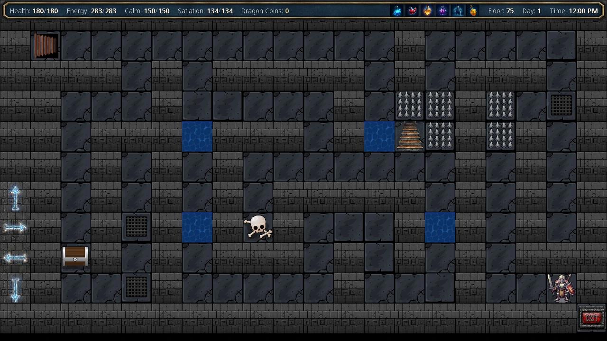
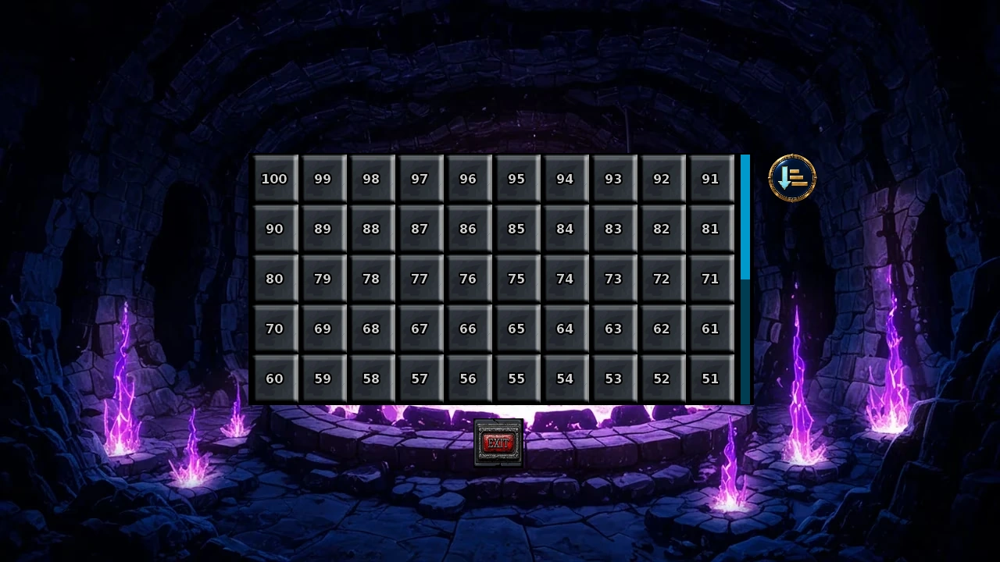
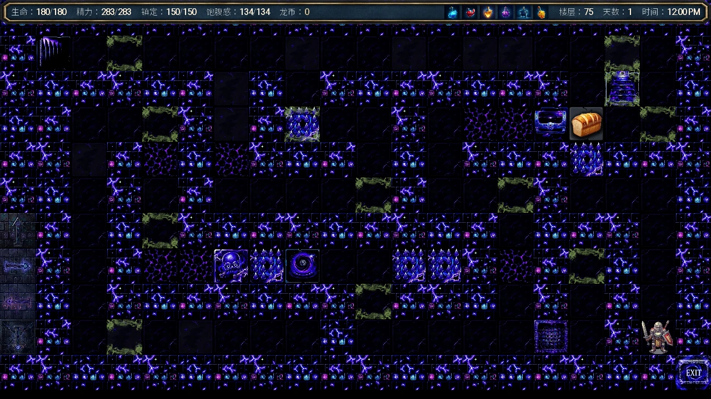

Select a screenshot to enlarge it. Screens show example inventories and progress.
Infinity Dungeons · v1.0 Beta x
Infinity is a separate endless dungeon for repeatable combat, Fighting XP, Specialist points, Wealth, and materials. Start at a depth you can survive; the enemy pool is broad from Floor 1, while deeper floors raise both rewards and danger.
- Defeat the ordinary Floor 40 guardian and enter the Void Chamber.
- Choose a reached Infinity depth; ordinary floor records are separate.
- Read enemy traits before relying on one attack type.
- Check the actual awarded item: loot balancing can redirect it.
- Leave to bank progress and spend materials outside the run.
Unlock and enter
- Reach Floor 40 of the ordinary dungeon and defeat its guardian.
- Return to the Underground Catacombs, then choose Enter the Void Chamber. This entrance requires the full version and the extra supporter-content access described in its notice.
- In the chamber, select Enter the Infinity Dungeons.
- Choose a reached Infinity floor. A fresh Infinity record starts at 1; ordinary Floor 40 does not unlock Infinity Floor 40.
The game autosaves before entry. The floor picker scrolls beyond its visible rows and can reverse the order. Cancel with its exit button or Esc. There is no final Infinity floor or further supporter gate between its depths.

Descend, revisit, and understand what persists
The map uses the ordinary 20 × 11 layout and movement controls: directional buttons, configured keys, adjacent clicks, and optional click-to-move. You start near the bottom right and descend near the top left. Infinity removes the ordinary key-and-locked-door stair puzzle.
| Action | Result |
|---|---|
| Descend | Advance one depth, record a new highest floor, and generate a fresh layout, theme and tint. |
| Activated trapdoor | Also advances one depth and records it. |
| Ascend, where stairs are present | Move up one depth, no lower than 1, and generate a fresh map. |
| Exit / re-enter | Keep highest depth and earned inventory; discard the map. Re-enter any reached depth to make another map. |
| Load a save | Restore saved progression, then enter again. Loading does not resume an active Infinity map. |
The shown Infinity depth drives combat scaling and several loot checks. A random ordinary theme drives much of the terrain; special layouts 13, 23, and 26 are excluded from the theme pool. A mechanical-looking Infinity Floor 3 is still depth 3; its appearance is not a promise of ordinary Floor 43 difficulty or merchants.
Infinity excludes normal story scenarios, fixed choice-based guardians, secret-wall routes, recruitment offers and their counters, and Fighters Guild quest placements. Its kills do not advance those guild quests. Seek those goals in the ordinary dungeon. Mechanical merchant machines are also excluded from Infinity generation.

Expect varied enemies at every depth
Eligible movement tiles use a 17% battle check per step. The combined pool includes ordinary, blood, underwater and mechanical-liquid enemies, four Infinity-exclusive enemies, and 17 repeatable boss profiles. Original floor ranges are ignored; a strong enemy can appear on Floor 1. Boss copies retain relevant combat defenses but do not hand out their original scripted story trophy. Marked dungeon-boss victories also award one Fighters Guild clout, independently of guild quest progress.
| Enemy | What to know |
|---|---|
| AISlop | Poison-oriented attacks; Light weakness. Uses ordinary eligible collection drops. |
| Phoenix | Fire defenses and absorption, Ice weakness and regeneration. Victory gives one Phoenix Feather alongside eligible other rewards. |
| Treasure Goblin | Innate and ordinary dodge plus a force field; Light weakness. Gives two collection awards instead of the ordinary collection roll, each checked separately by inventory balancing. |
| Metal Slime | Heavy magic resistance and reduction; Lightning weakness; protected from instant kill. Gives ×10 Fighting XP and ×2 Specialist points, and uses a 15% base collection roll. |
Use Combat for attack costs, elements, reaction blocks, force fields, status effects, and escape. A color tint alone does not identify an enemy’s element.
Depth scaling and modifier counts
At Infinity depth N, effective combat level starts at 2N plus the enemy’s own level bonus. The additional Infinity power multiplier is 1 +0.1 × floor(N ÷5): ×1 at depths 1–4, ×1.2 at 10–14, ×1.8 at 40–44, and ×3 at 100–104. This is additional to level-based Health growth, not the complete difficulty curve.
Before traits and difficulty, enemy Health successively applies base Health ×(1 +0.22 × effective level), then ×(1 +0.04 × (effective level −1)), then the Infinity power multiplier, rounding down at each step. Theme-specific ordinary deep-floor boosts are not added again.
| Rolled traits | Chance | XP / Specialist multiplier | Regular-mob Health factor |
|---|---|---|---|
| 0 | 65% | ×1 | ×1 |
| 1 | 26.25% | ×2 | ×2 |
| 2 | 7% | ×3 | ×3 |
| 3 | 1.75% | ×4 | ×4 |
Boss tiers avoid that count-based Health multiplier, while individual traits still apply. Reward-count multipliers apply across tiers. Victory doubles ordinary Fighting XP and Wealth before applicable bonuses; Gladiator Belt still adds 50% Fighting XP. A qualifying Specialist action begins at 1 + random 1…N points before trait and enemy bonuses; see Specialist paths.
What each trait changes
| Trait | Effect |
|---|---|
| Tiny | Sets base dodge to 75%; lowers damage multiplier by 0.25, minimum 0.1. |
| Huge | Health ×1.5; damage multiplier +0.5. |
| Cursed | Dark strength, Light weakness, 50% Dark absorption, +15 points dodge, and Umbral Lance. |
| Ghostly | +25 points dodge, +30 magic resistance, +35 points general damage reduction. |
| Chaotic | Can copy one other trait’s mechanics; the copy does not add another rolled-trait reward or Health-count bonus. |
| Angry / Crazy | Angry: damage multiplier +0.25. Crazy: +18 points critical chance bonus and +25–100 flat critical bonus. |
| Mystical / Fierce | Mystical: +50 magic resistance. Fierce: +25 points general damage reduction. |
| Calm | 35% passive regeneration chance for 500–1,500 Health before difficulty, capped at maximum; Fire that turn prevents it. |
Ordinary rolls exclude duplicates and Tiny/Huge together, and allow one aura-group trait; Shadow occupies that group too. Chaotic’s copied mechanics are selected separately. A damage-multiplier addition is not the same as adding that percentage to the final Health loss.
Walking still costs supplies
Base movement costs four minutes, reduced by one each for Time and Fleet Footed; hunger accumulates with that time. Eleven standard trap types use a flat 40% activation check, ignoring their ordinary stat avoidance. Fire Elemental Talisman still grants immunity to the standard lava trap. These Infinity trap hits do not use the ordinary floor-trap “two damage per armor level” reduction.
That 40% check does not cover every hazard. Fire, poison and Void-gas overlays retain separate movement damage, and mechanical themes retain their special traps, turrets and machines. Watch your Health and Energy between fights.
Standard activated trap reference
Let T be the selected terrain theme and B a fresh random whole number from 0 to the current Infinity depth.
| Trap | Effect when activated |
|---|---|
| Spikes / Spider / Saw | 10 +2(T−1)+B / 15 +3(T−1)+B / 20 +4(T−1)+B damage. |
| Plant / Beartrap / Poison Vine | 2×[15 +3(T−1)]+B / 18 +3(T−1)+B / 12 +2(T−1)+B damage. |
| Poison Gas | 8+B damage. |
| Quicksand | 12+B damage and ten extra minutes, with corresponding hunger. |
| Ice | 4+B damage, then a random-direction slip if alive. |
| Lava | 20 +2T+B damage, unless protected by Fire Elemental Talisman. |
| Trapdoor | Descend one floor and generate a new map. |
Fire overlay costs five Health unless protected by Shield or Fire Elemental Talisman; poison overlay costs eight unless protected by Shield; Void gas costs ten without those exemptions. Nearby supernova zones can drain 1–30 Energy.
Understand the material reward layers
The six collection materials are Void-Touched Fang, Shimmering Heartscale, Soul Thread, Gilded Heart, Abyssal Eye, and Mutagenic Ichor. Eligible enemies offer matching material candidates; some also offer Leather, Sea Shells or Components. Defeating a candidate enemy is not a guarantee of that exact final material.
Ordinary collection chance, bosses, and loot bonuses
The ordinary base collection chance is min(20%, 1 + floor((depth −1) ÷5) percent). It is 1% at depths 1–5 and reaches 20% at 96+. Metal Slime uses 15% instead. Designated boss collection overrides multiply this chance by ×2 or ×3 and set the monster-material candidate, before other bonuses; eligible ordinary resource candidates can still share the selection.
For supported drops, zero rolled traits leaves chance P; one makes it 2P; two make it 2P +5 percentage points; three make it 2P +10 points. Thieves Gloves add five points, plus 0.1 point per owned Phantom Stone level. Ordinary collection applies base/custom chance → boss multiplier → trait bonus → Gloves, capped at 100%.
A marked dungeon-boss victory has a separate once-only collection roll at actual encounter Infinity depth percent, capped at 100%. A depth-40 boss gets 40% regardless of its higher effective combat level; depth 100+ guarantees this separate roll. It chooses from the six materials before balancing and receives no trait, Gloves or boss-chance multiplier.
Gloves plus Phantom Stone also enable an independent jackpot of 0.002% per stone level, capped at 100%, from a broader repeatable dungeon-item pool. At level 10, that is 0.02%; the supported ordinary Gloves bonus is separately six percentage points. Luck Potion can retry the jackpot. Chronium is outside these bonus pools.
Why the awarded material can change
Infinity balances eight inventories: the six collection materials, Gems, and Leather. Before a selected award, an item held at strictly more than 125% of that group’s average stock is redirected to a random one of the three least-stocked items. Equality keeps the selected item. Ties are randomized.
Each award is checked separately, so Treasure Goblin’s first award can affect its second. The battle message names what you actually received. Components, Sea Shells, Vouchers, Blood Orbs, Phoenix Feathers and Chronium are outside this balancing group. Spending an overstocked material can influence later redirects.
Chests and Mimics
Chests require Lockpicking or raw Strength/Ability of at least 30 +2 × (theme −1). After a successful opening, there is a 30% Mimic ambush chance. The chest Mimic uses current Infinity combat depth and has no randomly rolled traits; Fire is its weakness.
Victory consumes the chest and pays its stored treasure amount—50 +25 × theme + random 0–30 Wealth—instead of ordinary battle Wealth, plus one guaranteed collection award before balancing. A separate 15% bonus, increased by Gloves but not traits, can give Leather, a Blood Orb, a Dragon Coin, or Components. The Voucher roll is separate.
Voucher rates after the current final reduction
Selected enemies also roll one Voucher independently. Trait and Gloves bonuses are applied first, then the entire resulting chance is multiplied by 0.25. The following are chances with neither bonus:
| Enemy | Chance |
|---|---|
| Goblin / Dark Elf / Street Hoodlum | 0.25% |
| Bandit Brute / Bandit Rogue / Hobgoblin / Pirate / Security Drone / Shadow Assassin | 0.5% |
| Android | 0.75% |
| Goblin Boss / Bandit Captain | 1% |
| Mimic | 1.25% |
| Goldman | 1.5% |
| Treasure Goblin | 2% |
For example, a 5% Mimic starting chance plus five Gloves points becomes 10%, then 2.5% after the final reduction. The Gloves addition is not exempt from that reduction.
Chronium after Cid’s introduction
After completing Cid’s Something That Holds introduction, specified eligible Infinity bosses have an independent flat 5% chance to award one whole Chronium. Depth, traits, Gloves, Phantom Stone, Luck Potion and ordinary collection balancing do not raise or redirect this roll. See Cid for the unlock and Mining for its separate ore route.
Show eligible Chronium boss profiles
Vampire Lord, Skeleton King, Emerald Dragon, Balrog, Phantom Captain, Cthulhu, Dark Sylph, The Grim Reaper, the Proxy Warden, and Mech Siege Tank. The roll requires a qualifying Infinity boss victory after the introduction.
Spend the loot after returning
Infinity has no ordinary merchant encounters to plan around. Return to use your collected resources:
- Theneas: raise a selected owned Soul Stone by one level, paying one each of the three specified Infinity materials shown for that stone.
- Forge: Gemmed upgrades use a specified collection material alongside ingots and Gems; Chronium has its own final upgrade tier.
- Reclamation Bay: convert deliberately selected surplus through its displayed exchange. Queuing/reclaiming consumes the submitted items according to that service’s rules.
- Items and recipes: craft gifts and other items that ask for these materials. Dragon Coins and Components also fund normal-dungeon mechanical merchants.
A comfortable reached depth is useful for farming. Push deeper when you can handle varied elements, evasive enemies, force fields, sustained healing, and the route’s hazard damage.
Exit, defeat, and practical blockers
During exploration, use the bottom-right exit or Esc to return to the Void Chamber. Highest reached depth and earned inventory remain; the active map is discarded. Save after the run to retain the new record.
In ordinary Infinity fights, an independent 18% flee-failure check applies before the usual calculation, even with Shadow Step. Forced/boss situations instead allow a desperate 3% escape chance. The exploration exit is available again after combat is resolved.
Supported battles can use eligible Pixie’s Promise and enabled Phoenix Feather rescues. If normal fainting occurs, the active run ends, you return home at half Health, Energy, Calm and Satiation, and 24 hours of base time passes; highest Infinity depth is retained. See Combat for rescue priority and exceptions.
I met a major enemy on Floor 1
Original floor ranges are ignored. Enter with more than a single-element damage plan, even when farming shallow depths.
The room looks mechanical but has no shop
Theme and actual Infinity depth are separate. Normal mechanical merchants are excluded; spend the resources after leaving.
I cannot find the key
Infinity’s stair route does not require the ordinary key/door puzzle. Find a traversable route to the stairs.
I got a different material from the expected enemy
Candidate selection and the eight-item balancing rule both matter. Read the actual awarded item in the result message.
High stats did not avoid a trap
The eleven standard traps use fixed activation rather than ordinary avoidance stats; overlays and mechanical hazards have separate rules.
无限地下城 · v1.0 Beta x
无限地下城是独立的无尽模式，适合反复战斗，积累战斗经验、专家点数、财富与材料。先选能稳定生存的深度；从第 1 层起敌人池就很广，继续深入会同时提高收益与危险。
解锁与首次进入
- 到达普通地下城第 40 层，击败该层守卫。
- 回到地下墓穴，选择「进入虚空密室」。此入口需要完整版，以及进入提示中的额外支持者内容权限。
- 在密室选择「进入无限地下城」。
- 选择已到达的无限楼层。新记录从第 1 层开始，普通 40 层不会直接解锁无限 40 层。
入场前会自动存档。选层列表可以滚动到可见范围以外，也能切换排序；点击退出或按 Esc 可取消。无限模式没有最终楼层，层间也没有进一步的支持者门槛。

下降、重访，以及保留哪些进度
使用普通地下城的 20 × 11 地图与移动方式：方向按钮、自定义按键、相邻点击，以及可选的点击移动。从右下方出发，前往左上方下降。无限地图不需要普通模式的钥匙与上锁楼梯门。
| 行动 | 结果 |
|---|---|
| 下楼 | 深度加一，记录新的最深层数，并生成新的布局、主题与颜色。 |
| 触发陷门 | 同样下降一层，并记录该深度。 |
| 使用存在的上行楼梯 | 上升一层，最低回到 1；重新生成地图。 |
| 离开／重新进入 | 保留最深记录与所得物品，丢弃地图。可重进任意已到达深度生成新地图。 |
| 读取存档 | 恢复已保存记录，再重新入场；不会继续一张正在进行的无限地图。 |
画面显示的无限深度决定战斗强度与若干掉落判定，随机普通主题则决定许多地形；特殊布局 13、23、26 不在主题抽取池中。外观像机械深渊的无限第 3 层，仍是深度 3，不代表普通第 43 层的强度或商人配置。
无限模式不放普通故事事件、固定选项式守卫、隐藏墙路线、招募机会及其次数，也不放战士公会任务格，击杀不会推进那些公会任务。这些目标请回普通地下城处理；机械商人也不会生成在无限模式中。

任何深度都可能遇到不同类型的强敌
符合条件的移动格每步有17% 战斗判定。混合敌人池包含普通、血池、水下、机械液体敌人，四种无限专属敌人，以及 17 种可重复首领档案；忽略原本的楼层范围，所以第 1 层也可能遇到强敌。首领复制体保留对应战斗防御，但不会发放原剧情的一次性奖品。标记为地下城首领的胜利还会给予 1 点战士公会声望，与公会任务进度分别计算。
| 敌人 | 需要留意 |
|---|---|
| AI废料 | 偏向毒系攻击，弱光明；使用普通的适用收藏材料掉落。 |
| 凤凰 | 火系防御与吸收，弱冰，并会再生；获胜给予一根凤凰羽毛，仍可获得其他适用奖励。 |
| 宝藏哥布林 | 先天闪避、普通闪避和力场，弱光明。以两次收藏奖励替代普通收藏掉落判定，每次分别接受库存平衡。 |
| 金属史莱姆 | 高魔抗、高减伤，弱雷电，受保护而不能即死。战斗经验 ×10、专家点数 ×2，收藏掉落基础概率改用 15%。 |
招式费用、元素、限时格挡、力场、异常状态与逃跑见战斗系统。单凭颜色不能判断敌人的元素。
展开深度缩放与特性数量
无限深度为 N 时，有效战斗等级从2N＋敌人自身等级加值开始；额外无限强度倍率为1＋0.1 × 向下取整（N ÷ 5）。1–4 层为 ×1，10–14 为 ×1.2，40–44 为 ×1.8，100–104 为 ×3。这是等级成长之外的倍率，不是完整难度曲线。
在特性和难度修正前，敌方生命依次套用「基础生命 ×（1＋0.22 × 有效等级）」「×（1＋0.04 ×（有效等级－1））」「× 无限强度倍率」，每步向下取整；不会再次加入普通主题的深层专属倍率。
| 抽到特性数 | 概率 | 经验／专家倍率 | 普通敌人生命倍率 |
|---|---|---|---|
| 0 | 65% | ×1 | ×1 |
| 1 | 26.25% | ×2 | ×2 |
| 2 | 7% | ×3 | ×3 |
| 3 | 1.75% | ×4 | ×4 |
首领类别不接受这项按数量增加的生命倍率，但单项特性仍生效；奖励的数量倍率则跨类别适用。获胜时普通战斗经验、财富先翻倍，再处理对应加成，角斗士腰带的 50% 经验加成仍可用。符合条件的专家行动先获得「1＋随机 1…N」点，再处理特性和敌人加成，详见专家路线。
展开每种特性的作用
| 特性 | 效果 |
|---|---|
| 娇小 | 基础闪避设为 75%，伤害倍率减 0.25，最低为 0.1。 |
| 巨大 | 生命 ×1.5，伤害倍率 +0.5。 |
| 被诅咒 | 抗黑暗、弱光明，50% 黑暗吸收，闪避 +15 个百分点，并获得暗影长枪。 |
| 幽魂般 | 闪避 +25 个百分点、魔抗 +30、一般减伤 +35 个百分点。 |
| 混沌 | 可能复制另一种特性的机制；复制不额外增加按抽取数量计算的奖励或生命倍率。 |
| 狂怒／疯狂 | 狂怒使伤害倍率 +0.25；疯狂使暴击概率加值增加 18 个百分点，并增加 25–100 的暴击固定加伤。 |
| 神秘／凶猛 | 神秘使魔抗 +50；凶猛使一般减伤 +25 个百分点。 |
| 冷静 | 35% 概率被动再生 500–1,500 生命，再受难度修正并封顶；该回合使用火焰魔法可阻止再生。 |
普通抽取不重复，也不同时抽到娇小和巨大；光环类别最多一项，被诅咒也占这个类别。混沌复制另外选择。伤害倍率增加某个数值，不等于最终损血直接增加同样百分比。
走路同样需要补给
基础每步四分钟，时间药水与步履轻盈各减少一分钟，饥饿随时间累计。十一类标准陷阱采用固定 40% 触发判定，不再按普通模式的属性回避。火元素护符仍可完全防护标准熔岩陷阱；这组无限陷阱也不使用普通「每级护甲减两点」的楼层陷阱减伤。
40% 规则不覆盖所有危险。火、毒、虚空气体覆盖地形仍独立造成移动伤害，机械主题也保留专属陷阱、炮塔和机器。两场战斗之间同样要看生命和精力。
展开标准陷阱触发后的数值
T 为地形主题层数，B 为从 0 到当前无限深度之间重新抽取的随机整数。
| 陷阱 | 触发效果 |
|---|---|
| 尖刺／蜘蛛／锯 | 分别造成 10＋2(T−1)＋B／15＋3(T−1)＋B／20＋4(T−1)＋B 伤害。 |
| 植物／捕兽夹／毒藤 | 分别造成 2×［15＋3(T−1)］＋B／18＋3(T−1)＋B／12＋2(T−1)＋B 伤害。 |
| 毒气 | 8＋B 伤害。 |
| 流沙 | 12＋B 伤害，额外十分钟与相应饥饿。 |
| 冰面 | 4＋B 伤害，存活时再随机向一个方向滑动。 |
| 熔岩 | 20＋2T＋B 伤害，火元素护符可防护。 |
| 陷门 | 下降一层，重新生成地图。 |
火焰覆盖每步扣 5 生命，护盾或火元素护符可防护；毒气覆盖扣 8，护盾可防护；虚空气体扣 10，没有上述豁免。超新星附近区域还可能扣 1–30 精力。
分清几层材料奖励
六种收藏材料为虚触之牙、微光心鳞、灵魂之线、鎏金之心、深渊之眼、异变灵液。符合条件的敌人提供相应候选，部分还提供皮革、海贝壳或组件；打倒候选敌人，不保证最终一定发放那一种材料。
展开普通收藏概率、首领奖励与掉落加成
普通基础收藏概率为min（20%，1＋向下取整（（深度－1）÷5）%）：1–5 层为 1%，96 层起达到 20%。金属史莱姆改用 15%。指定首领的收藏规则会先将概率乘以 2 或 3，并指定怪物材料候选；适用的普通资源候选仍可能参与选择。
对于支持特性加成的掉落，原始概率为 P 时，零项保持 P，一项变为 2P，两项为 2P＋5 个百分点，三项为 2P＋10 点。盗贼手套再增加 5 点，拥有幻影之石时每级另加 0.1 点。普通收藏顺序为基础／专属概率 → 首领倍率 → 特性 → 手套，最高 100%。
标记为地下城首领的胜利，还会独立进行一次实际遭遇无限深度（%）的收藏判定，最高 100%。40 层首领为 40%，不看更高的有效战斗等级；100 层起这次独立判定必定成功。它先从六材料中选择，再接受库存平衡，不受特性、手套或首领概率倍率加成。
手套＋幻影之石还开放独立的额外奖品判定，每级幻影之石为 0.002%，最高 100%，从更广的可重复地下城物品池中选择。10 级为 0.02%；与此同时，普通手套加成另为 6 个百分点。幸运药水可以重试额外奖品判定；时源矿不在这些加成奖池里。
为什么实际拿到的材料变了
无限模式会平衡八项库存：六种收藏材料、宝石、皮革。发奖前，若所选物品数量严格高于八项平均库存的 125%，会改发库存最低三项中的随机一项；恰好等于门槛则保留，数量相同的排序会随机处理。
每次奖励分别检查，所以宝藏哥布林第一份奖励也可能影响第二份。消息显示实际得到的内容。组件、海贝壳、兑换券、鲜血宝珠、凤凰羽毛和时源矿不属于这组库存平衡；使用过量囤积的材料，可以影响之后的改发结果。
宝箱与宝箱怪
宝箱要求开锁，或原始力量／能力任意一项达到30＋2 ×（主题层数－1）。成功打开后，有30% 概率遭宝箱怪伏击。这场战斗按当前无限深度缩放，没有额外随机特性，弱火。
获胜消耗宝箱，按保存的宝箱数额发放财富：50＋25 × 主题层数＋随机 0–30，替代普通战斗财富，并保证一次收藏奖励，再接受库存平衡。另有 15% 追加判定，可受手套提高但不受特性提高，随机给皮革、鲜血宝珠、龙币或组件；兑换券另算。
展开当前最终缩减后的兑换券概率
指定敌人还有独立的一张兑换券掉落判定。先处理特性与手套，再将整个最终概率乘以 0.25。下表为没有这些加成时：
| 敌人 | 概率 |
|---|---|
| 哥布林／黑暗精灵／街头混混 | 0.25% |
| 强盗暴徒／强盗游荡者／大哥布林／海盗／安保无人机／暗影刺客 | 0.5% |
| 仿生人 | 0.75% |
| 哥布林首领／强盗队长 | 1% |
| 宝箱怪 | 1.25% |
| Goldman | 1.5% |
| 宝藏哥布林 | 2% |
例如宝箱怪原始 5% 加上手套的 5 个百分点，先成为 10%，最后再缩为 2.5%；手套增加的部分同样接受最终缩减。
完成 Cid 介绍后的时源矿
完成 Cid 的「坚守之物」介绍后，指定无限首领有独立、固定的5% 概率发放 1 个完整时源矿。深度、特性、手套、幻影之石、幸运药水和普通库存平衡都不会提高或改发这项奖励。解锁见Cid，原矿获取则见采矿系统。
展开可掉时源矿的首领档案
吸血鬼领主、骷髅王、翡翠巨龙、Balrog、幽灵船长、Cthulhu、黑暗西尔芙、死神、代理典狱官和机械攻城坦克。必须先完成介绍，再在无限模式中取得符合条件的首领胜利。
离开后，把材料用在明确目标上
无限模式没有可依赖的普通商人遭遇，带着资源回来后可使用这些服务：
- Theneas：选定一颗已持有灵魂石加一级，支付该石选单所列的三种无限材料各一个。
- 锻造：镶宝石升级需要指定收藏材料、锭与宝石，时源矿另有最终升级层级。
- 再生工坊：按显示兑换，将选定的多余物品转成资源；排队与回收会按该服务规则消耗提交物品。
- 物品与配方：制作需要这些材料的礼物等物品。龙币与组件也能用于普通地下城的机械商人。
已经到达、可以稳定应付的深度很适合收集。准备好不同元素、应对闪避和力场的方法，以及持续治疗和地形补给后，再继续推进。
退出、战败与常见卡点
探索中使用右下角出口或 Esc 回虚空密室。最深记录与所获物品保留，当前地图清除；行程结束后保存，才能保留新纪录。
普通无限战斗会先独立判定 18% 逃跑失败，影步也适用；强制／首领战则改为 3% 紧急逃脱机会。战斗结束后，才能再使用探索出口。
适用战斗可以触发符合条件的 Pixie的承诺与已启用的凤凰羽毛救援。若最终普通昏迷，行程结束，回家时生命、精力、镇定、饱腹感为上限一半，并经过基础 24 小时，最深无限记录保留。救援优先级和例外见战斗系统。
为什么第 1 层就遇到大敌？
忽略敌人原始楼层范围。浅层收集也应带上多种应对方式。
房间像机械区域，却找不到商人
主题与实际无限深度分别计算，普通机械商人不会生成；离开后再使用资源。
一直找不到钥匙
无限楼梯路线不需要普通钥匙与上锁门，寻找可通行的楼梯路线即可。
为什么掉落与预期敌人材料不一样？
候选选择和八项库存平衡都会影响结果，以实际奖励消息为准。
属性很高，为什么还躲不开陷阱？
十一类标准陷阱使用固定触发规则，覆盖地形与机械危险则另算。
Adapted and updated from the community Chronoromancer Wiki. Community source and history · CC BY-SA 4.0. Game images © Chronoromancer Studio.